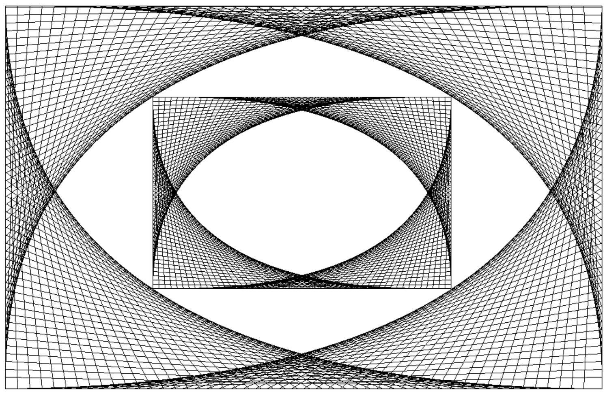
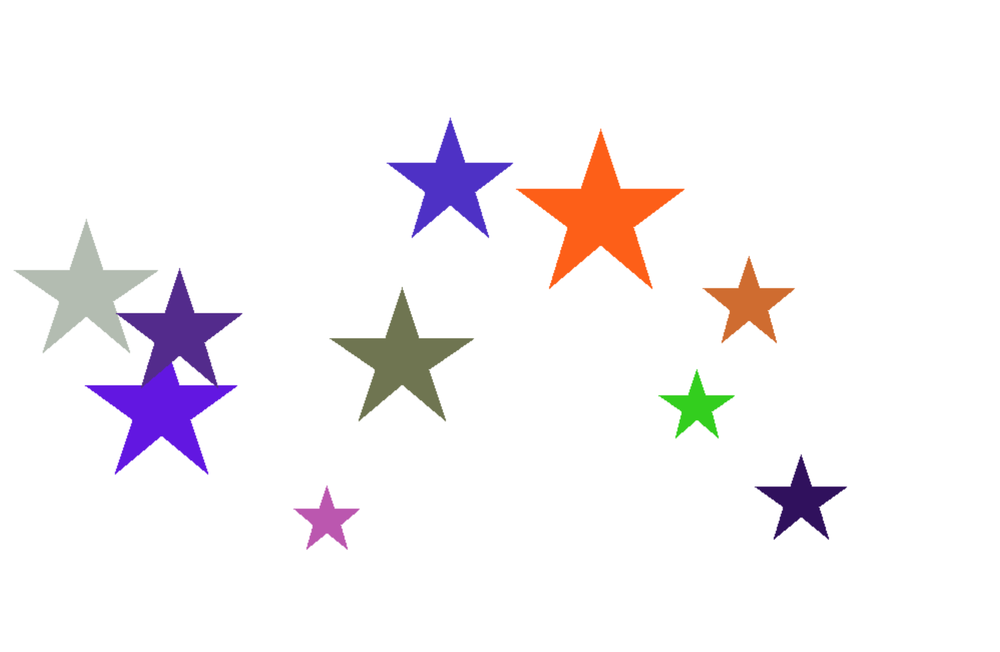

In CS, Mrs. Taricco has taught us how to use HTML (Hypertext Markup Language) and CSS (Cascading Style Sheets) while creating our own personal websites. We also learned how to code Java programs. We wrote many programs in each unit to help us develop problem-solving and logical thinking skills. Below are two of my favorite programs, which involved utilizing Applets (Java version 1.8). Visit my Apps for Good page to learn about my group application project I did in D term.
LineArtGraphics
LineArtGraphics is a class that creates an image with only straight lines. It was the lab for the Iterations unit when we learned about for and while loops. For this lab, I controlled the start and end point of each line using an (x, y) coordinate that has a fixed part and an incremented or decremented (by a constant value) part. Inside of the original drawing, I sized down the original and positioned it in the center of the drawing.
Stars
Stars was my favorite exercise from the Static Arrays unit in which we learned how to use Arrays. The program prints ten stars of a random size, location, and color. I created a variable for size and center of the star and used those with trigonometric ratios to pinpoint the location of each point of the star. Creating random RGB values allowed me to color in each star, making it more visually appealing.